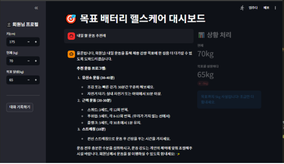
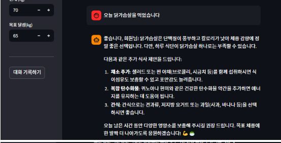
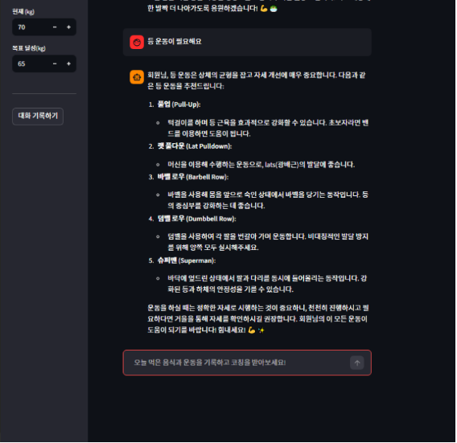

안녕하세요,
원태규입니다.
UX와 시스템 안정성의 균형을 맞추는 개발자입니다.
꼼꼼한 예외 처리와 비동기 통신을 통한 UX 개선을 고민하며, 머릿속의 아이디어를 코드로 실현하는 것을 즐깁니다.
Profile
2003. 01. 10
서울특별시 동대문구
Education
클라우드 기반 JAVA 웹개발자 시큐어코딩 과정
수료대우능력개발원 KDT (9개월 완주)
인덕대학교 정보통신공학과
재학중Core Skills
Certificates & Links
프로젝트
학식목장
대학생 식사·만남 매칭 및 캠퍼스 커뮤니티 플랫폼
단순한 식당 추천을 넘어, 대학생들의 목적(학식, 소개팅, 과팅)에 맞는 위치 기반 매칭과 실시간 채팅을 지원합니다. 또한 사용자 취향 데이터를 학습한 AI가 상황에 맞는 최적의 장소를 큐레이션 해주는 종합 커뮤니티 서비스입니다.
WHAT I DID
초개인화 AI 챗봇 엔진 구축
단순 키워드 매칭의 한계를 넘어, Google Gemini API와 Spring AI를 도입했습니다. 사용자의 '선호 음식 데이터'를 실시간으로 추출해 시스템 프롬프트에 동적(Context Injection)으로 주입함으로써, 맞춤형 식당 큐레이션을 구현했습니다.
권한 기반 회원가입 & 마이페이지
일반 유저와 점주(Owner)의 권한을 명확히 분리한 회원가입 시스템을 설계했습니다. 학교 이메일 인증 로직을 추가하고, 정규식(Regex)을 활용한 프론트엔드 단의 실시간 입력 데이터 필터링으로 보안을 극대화했습니다.
DOM 제어 기반 UX 최적화
입력 폼 글자 수 초과 시 발생하는 이벤트 충돌 문제를 해결하기 위해 자바스크립트로 DOM 속성을 동적 제어하고, 디바운싱(Debouncing) 기법이 적용된 비동기 토스트 알림을 띄워 UX를 개선했습니다.
Service Screens (클릭하여 확대)

로그인

회원 유형

일반 가입

점주 가입

대시보드

관리자 화면
지능형 헬스케어 AI 코치
말하는 대로 기록되는 대화형 맞춤 헬스케어 시스템
기존 건강 관리 앱들의 복잡한 수동 입력 방식이 유발하는 '기록 허들(Hurdle)'을 해결하기 위해 기획했습니다. 사용자가 일상적인 대화("오늘 샐러드 먹고 스쿼트 30개 했어")를 입력하면, AI가 문맥을 파악해 식단과 운동 데이터를 자동 구조화하고 개인 신체 정보에 맞춘 전문적인 코칭 피드백을 제공합니다.
CORE ARCHITECTURE
자연어(NLP) 기반 지능형 데이터 파싱
정형화된 드롭다운 입력 방식을 탈피했습니다. 프롬프트 엔지니어링을 통해 비정형 텍스트에서 '식단/운동' 카테고리를 자동 분류하고 핵심 수치를 추출하여 구조화된 데이터로 파싱하는 로직을 구현했습니다.
지속적 문맥 기억 (Context Awareness)
단발성 챗봇의 한계를 극복하기 위해 LangChain의 ConversationBufferMemory와 Streamlit Session State를 결합했습니다. 과거 대화 맥락을 상시 유지하여, 유기적인 코칭이 가능합니다.
동적 프롬프트 인젝션 (맞춤형 피드백)
사이드바를 통해 입력받은 사용자의 신체 정보(키, 체중, 목표 체중)를 시스템 프롬프트에 실시간으로 주입(Injection)합니다. 고정된 답변이 아닌 개인의 현재 상태에 최적화된 피드백을 생성합니다.
Service Screens (클릭하여 확대)

목표 배터리 및 대시보드

지능형 식단 영양 피드백

맞춤형 운동 코칭
모바일 음성인식 AI 비서
Flutter와 Gemini API를 결합한 실시간 Voice Chat App
화면 터치와 키보드 타이핑이 불편한 상황에서도 AI를 쉽게 활용할 수 있도록 기획한 모바일 전용 음성 챗봇입니다. 사용자의 음성을 텍스트로 변환하여 Google Gemini 2.5 Flash 모델에 전달하고, 생성된 답변을 자연스러운 사람의 음성(TTS)으로 다시 읽어주어 실제 비서와 대화하는 듯한 UX를 제공합니다.
TECHNICAL HIGHLIGHTS
하드웨어 제어 및 UX 디테일 최적화
Flutter의 `speech_to_text` 모듈을 활용해 기기의 마이크를 제어하고, 한국어 로캘(ko_KR)을 자동 탐색하는 로직을 구현했습니다. 또한, 출력되는 TTS 음성의 속도를 0.5배로 세밀하게 조절하여 기계음 특유의 이질감을 줄이고 자연스러운 대화 UX를 완성했습니다.
API 과부하(Rate Limit) 방지 쓰로틀링
사용자의 연속적인 버튼 연타나 음성 중복 입력으로 인한 HTTP 429(Too Many Requests) 에러를 방지하기 위해, `DateTime`을 활용해 최소 800ms의 딜레이를 보장하는 쓰로틀링(Throttling) 방어 로직을 추가하여 서비스 안정성을 확보했습니다.
대화형 컨텍스트(Context) 유지 아키텍처
단발성 API 호출의 한계를 극복하기 위해 `ChatMessage` 객체 배열에 유저와 모델의 과거 대화 이력을 누적(History)시키고, 이를 JSON 페이로드로 직렬화하여 API에 전송함으로써 문맥을 기억하는 지능형 비서를 구현했습니다.
Education
교육
대우능력개발원 KDT · 클라우드 기반 Java 웹개발자 시큐어코딩 과정 · 2025.11 – 2026.08
소양교과
의사소통능력 · 문서작성능력
자바 프로그래밍
OOP · 컬렉션 · 멀티스레드 · 네트워크(TCP/IP) · 형상관리(Git)
RDBMS 활용
Oracle · SQL(DML/DDL) · 트랜잭션 · 프로시저 · JDBC
웹 표준 기술
HTML5 · CSS3 반응형 · JavaScript · AJAX(비동기)
서버프로그램 개발
HTTP · Servlet · 세션/쿠키 · JSP · EL/JSTL
프레임워크 기반 프로그래밍
MyBatis · Spring Core/MVC · RESTful · Maven
리눅스의 이해 및 활용
명령어 · 권한 · 네트워크 · Tomcat 운영 · 방화벽
AWS 클라우드 서버 구축·보안
EC2 · EBS · AMI · RDS · S3 · IAM · VPC · Docker 배포 · WAF
보안 코딩
애플리케이션 인증 보안 · 웹 취약점 분석 · 시큐어코딩
Spring AI
ChatClient/ChatModel · 프롬프트·Advisor · Tool Calling · 멀티 LLM 라우팅 · RAG(임베딩·벡터스토어) · Ollama 로컬모델 · 스트리밍 최적화
총 712h
Career Journey
끊임없이 성장하는 개발자
인덕대학교 정보통신공학과 입학
컴퓨터 공학 기초와 네트워크, 정보통신 지식을 탄탄하게 쌓으며 IT 분야에 대한 흥미와 기본기를 다졌습니다.
KDT JAVA 웹개발자 시큐어코딩 과정 이수
712시간 동안 프론트엔드부터 백엔드(Spring), 클라우드(AWS) 배포까지 실무 중심의 풀스택 개발 역량을 습득했습니다.
해커톤 대회 참가
제한된 시간 내에 팀원들과 협업하여 아이디어를 기획하고 프로토타입을 구현하며, 실전 문제 해결 능력과 협업 감각을 키웠습니다.
AI 기반 플랫폼 프로젝트 완성
'학식목장'부터 LLM을 활용한 '헬스케어 코치', 크로스플랫폼 '음성 AI 비서'까지, 최신 기술을 접목한 수준 높은 결과물들을 성공적으로 완성해냈습니다.
UX와 시스템의 균형을 아는 개발자,
원태규입니다.
꼼꼼한 예외 처리와 새로운 기술에 대한 호기심으로 늘 발전하고 있습니다. 저의 더 많은 고민과 기록들은 기술 블로그에서 확인하실 수 있습니다.